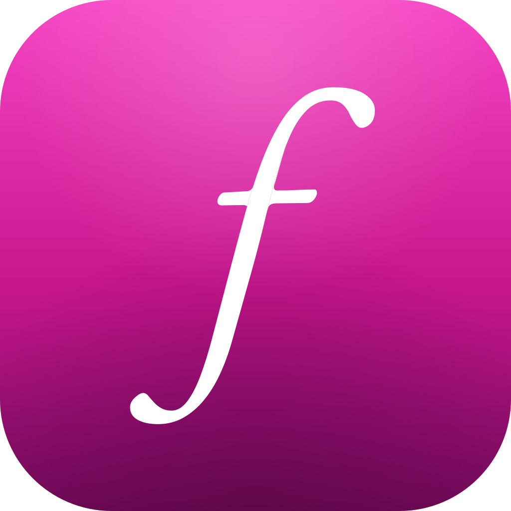

Edit the story,
not the waveform.
Professional narrative-audio production for documentary and journalism. Fuchsia Studio lets you build the piece from the transcript of your tape — reading, searching, and selecting the words that matter — and shape them into a story. On your Mac.

AI that never puts words in anyone's mouth.
Meet the Thread — a grounded collaborator that finds moments, proposes cuts, and answers "what is this section really about?" It works only from what's actually on your tape: it quotes verbatim, or it refuses. It never invents a line. It doesn't decide who's speaking — the tape does. And it never changes your story without your say-so. It's opt-in, and it runs on your own AI provider and your own account.
If you've watched other tools automate the judgement out of the work, this one is built the other way up: the Thread proposes, and you approve — or you don't.
You stay the author. The AI is the reach, never the authority.
Your audio never leaves your Mac. Ever.
Importing, transcribing, separating speakers, searching, editing, assembling, finishing — the whole craft runs on your machine, no account required. Even the index behind search is built on your Mac; your tape never visits a cloud to become findable. And nothing derived from your tape — not a transcript, not an excerpt — goes anywhere until you connect an AI provider.
For sensitive material, that's not a feature. It's the whole point.
Studio isn't sealed off from the network, though, and we'd rather name what it does than imply it does nothing. Two things reach out, and neither carries a word of your material: macOS fetches Apple's speech model if this Mac doesn't already have it, and the app asks the App Store what you've bought.
When you do connect the optional AI — at launch, Anthropic's models — it runs through your own key on your own account, and Studio sends only text, never your raw audio. Studio's powerful readings of your show and story respect your choices at the level of a specific tape: if answering a question would send words off your Mac from a tape you haven't approved, Studio asks you first — so nothing you meant to keep on your machine leaves without your say-so. Fuchsia's Thread helps you understand your tape, find the right material, and structure your story — anti-slop AI, grounded in your tape, quoting what was actually said, or telling you when it can't.
The first Narrative Audio Workstation.
Bring in hours of interview and field tape and Studio transcribes it and separates the speakers automatically, all on your Mac. Read the transcript, select the words that matter, and your selection becomes a clip. No more scrubbing a waveform hunting for the line you half-remember.
Turn on the optional AI reads and Studio will propose who's speaking — the way a careful producer would. It proposes a name only when someone actually says it on tape, plays you that verbatim moment, and waits for you to confirm. Names you've typed yourself are never overwritten.
The line you remember — and the ones you don't.
Type what you remember and Studio carries you across hours of tape in a keystroke — finding the words people said, and words with similar meaning, so you don't need the exact phrase. Every result is a moment you can play. And when you've found a moment that matters, select it — Studio suggests the related moments that echo it, even when they're worded differently. Your subject circles back to the same point twenty minutes later, in a different vocabulary; now you can see it. Lightning fast semantic search, on device — no key, no account, no network call.
And when you want a deep reading of what your tape is really about, the hidden themes and the through-lines drawn out, that's the optional AI reads.
From raw tape to broadcast-ready audio.
Everything between reading the transcript and handing off the final file — on your Mac.
Shape it into a story
Assemble your clips into a single running order and sculpt it, scene by scene. Studio keeps your whole piece in one clear shape, so you're always working on the story — not managing tracks. When a cut lands mid-word, Studio finds the clean edge for you — so you're not nudging handles a frame at a time.
Read it every way you need
One piece, three ways to read it. Script view reads the whole story as one authored document. Tape view lays the source out as a typographic page — every voice and take, with the speakers named, and verbatim find with ⌘F. Reading view is where the optional AI reads land, every claim one click from its audio.
Repair without invention
Some tape arrives wounded. De-hum notches out mains hum and its harmonics — 50 or 60 Hz — and De-clip rebuilds the peaks a clipped recording lost. Neither invents audio that was never recorded: they restore what the waveform itself implies, and they can make distorted tape broadcast-ready.
Finish it, then hand it off
Bring your piece to broadcast loudness with a finishing stage built for the spoken word, then export it your way — WAV, AIFF, AAC, Apple Lossless or FLAC, at 44.1, 48 or 96 kHz. Or hand the whole story to your DAW: a session for Ableton Live or Adobe Audition, or a Final Cut Pro XML that Logic imports, every clip nicely labelled and in place, your authored air intact — the raw audio, cut straight from your original tape, ready to mix. Bring it all in at any sample rate: a source already at the rate you're exporting to passes through untouched — byte for byte; anything else is converted with studio-grade resampling.
A studio you can program.
Everything in Studio, plus a control surface for professionals: drive the same studio from your own AI app, or straight from the command line — scriptable, batchable, headless. Render a finished, loudness-targeted file without an app window open.
Contact us for information about Studio Pro availability and pricing.
Learn about Studio Pro →